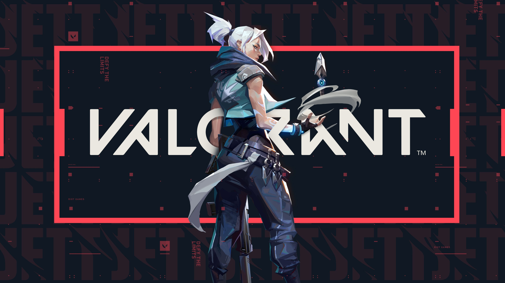

Відомості про студента
Мене звати Цибуля Олександр Олександрович, 25 років. Вивчився в ЦДУ ім.В.Винниченка на спеціальність право.
Місце роботи
Починаючи з 3-го курсу навчання на юридичній спеціальності, влаштувався помічником пивовара в "Традиційну броварню "ДУДЛЯР". Через 3 роки сумлінної праці, показавши свої навички в данній сфері та неабияку відданість своїй справі, був підвищений до посади пивовара, на якій і працюю на данний момент.
Хоббі
Основним моїм хоббі, на даний час, є гра Valorant.
Коротко про гру
Valorant — безкоштовний інтелектуальний шутер від першої особи, розроблений компанією Riot Games для Microsoft Windows. Вперше представлений під кодовою назвою Project A (укр. Проєкт Ей) у жовтні 2019 року. Гра розпочала закрите бета-тестування з обмеженим доступом 7 квітня 2020 року, після чого 2 червня 2020 року відбувся офіційний випуск. Розробка гри почалася в 2014 році. Valorant черпає натхнення із серії тактичних шутерів Counter-Strike.
Valorant — це командний інтелектуальний шутер від першої особи, який розгортається в найближчому майбутньому.Гравці грають за одного з набору агентів, персонажів, розроблених на основі кількох країн і культур по всьому світу. У режимі основної гри гравці призначаються або до атакуючої, або до команди, що захищається, причому кожна команда має п'ять гравців. Агенти мають унікальні здібності, кожна з яких вимагає зарядів, а також унікальну кінцеву здатність, яка вимагає заряджання через вбивства, смерть, кулі або цілі. Кожен гравець починає кожен раунд з «класичним» пістолетом і одним або кількома зарядами «підписних здібностей». Іншу зброю та заряди здібностей можна придбати за допомогою внутрішньоігрової економічної системи, яка присуджує гроші на основі результатів попереднього раунду, будь-яких вбивств, за які несе відповідальність гравець, і виконання будь-яких цілей. У грі є асортимент зброї, включаючи вторинну зброю, як-от стрілецьку зброю, і основну зброю, як-от пістолети-кулемети, дробовики, кулемети, штурмові гвинтівки та снайперські гвинтівки.Існує автоматична та напівавтоматична зброя, кожна з яких має унікальну схему стрільби, якою гравець повинен керувати, щоб мати можливість точно стріляти. Різні агенти дозволяють гравцям знаходити більше способів насадити Спайк і стиль на ворогів за допомогою скребків, стратегів і мисливців будь-якого виду. Наразі він пропонує на вибір 25 агент. Це Brimstone, Viper, Omen, Cypher, Sova, Sage, Phoenix, Jett, Raze, Breach, Reyna, Killjoy, Skye, Yoru, Astra, KAY/O, Chamber, Neon, Fade, Harbor, Gekko, Deadlock, Iso, Clove та Vyse
Суть гри:
- Основна мета: Одна команда намагається встановити та підірвати бомбу («Спайк»), а інша — знешкодити її або повністю знищити команду суперника.
- Агенти: Гравці вибирають персонажів (агентів), кожен з яких має унікальні здібності (дими, сліпи, розвідка, лікування тощо).
- Перемога: Гра триває до 13 виграних раундів у стандартному режимі.

Чому саме я обрав навчання на Full-Stack JavaScript Developer
Працюючи по 10-12 годин на день, я почав шукати альтернативи роботі пивовара. Перебравши десятки варіантів друг, який працює декілька років у сфері IT, порадив самому спробувати себе в данній сфері. Він же і порадив школу Hillel, як самий кращий варіант для навчання.
Спочатку, я записався на курс Front-end:Basic, не маючи ніякого досвіду в IT я вважав це ідеальним стартом. Потім, з технічних причин, мене перевели на курс, на якому я навчаюсь на данний момент.